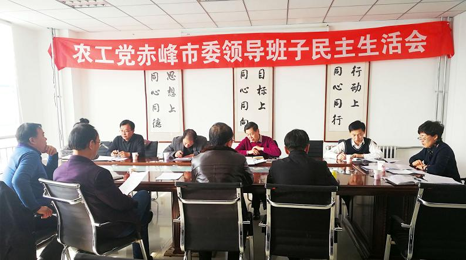

2018年3月11日，农工党赤峰市委员会组织召开了2017年度领导班子民主生活会。农工党赤峰市委主委、赤峰市政府副市长李艳茹主持会议，中共赤峰市委统战部人事党派科科长邢亚军出席会议。

会前，按照中共自治区党委统战部《关于开好2017年度各民主党派区委领导班子民主生活会的建议方案》，农工党赤峰市委及时制定了《农工党市委领导班子民主生活会方案》。会上，白凤强代表农工党赤峰市委领导班子从认真学习领会习近平新时代中国特色社会主义思想，认真执行中共中央、中共自治区党委、中共赤峰市委部署，自觉履行参政党职能建诤言献良策，担当负责攻坚克难、纠正四风不止、严格执行廉洁自律有关规定方面，进行了认真对照检查。李艳茹主委，隗春华、陈文武、李伟副主委分别结合各自学习情况、思想情况、作风建设、履职情况，依次做了个人对照检查发言，开展了批评与自我批评，提出了今后努力方向和整改措施。
李艳茹强调，民主党派领导班子民主生活会是领导班子成员的重要组织生活方式。认真开好2017年度农工党赤峰市委领导班子民主生活会，是深入学习贯彻中共十九大精神的重要举措，要通过召开民主生活会总结经验、沟通思想、增进团结，不断提高领导班子的凝聚力，提高履职水平和解决自身问题的能力。
李艳茹指出，2月6日习近平总书记与各民主党派座谈时指出，民主党派要加强自身建设，建立健全民主生活会制度。2月22日农工党自治区委召开了民主生活会，今天我们在这里召开民主生活会，是非常必要和及时的。这次会议是农工党赤峰市委的首次民主生活会，以后我们要以执政党为师，建立完善民主生活会的长效机制，通过查摆问题、总结经验、推动农工党党建工作顺利良性开展，使自身建设、参政议政、社会服务、组织建设等各项工作得到有效提升，使班子成员以更加饱满的精神状态、更加务实的举措，推动各项工作措施落实见效，努力开创新时代农工党工作新局面。